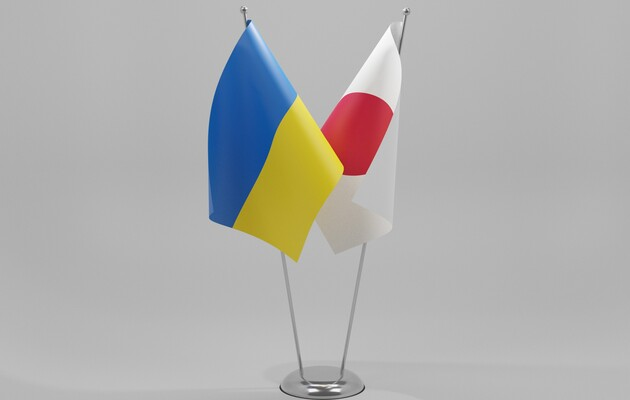
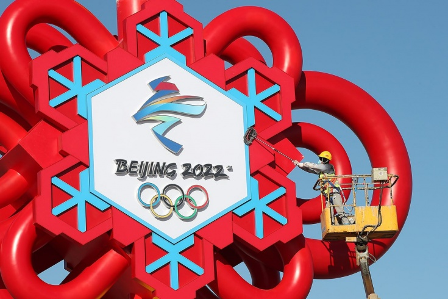
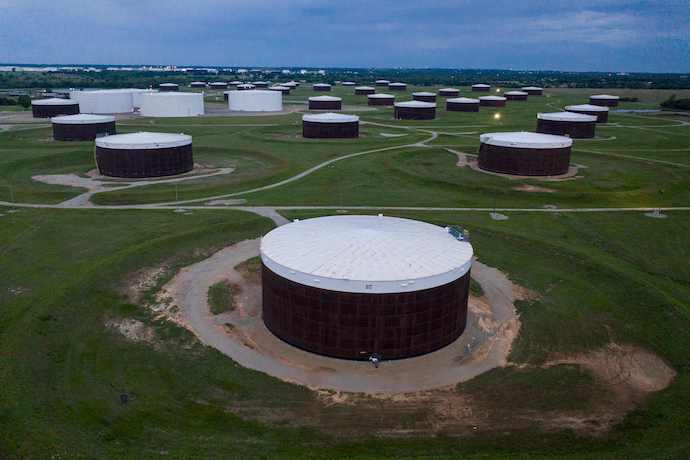

Японія пропонує $100 млн допомоги Україні. Зеленський подякував за підтримку
Японія ухвалила рішення надати Україні фінансову підтримку — кредити на 100 мільйонів доларів. Три мільйони доларів додатково спрямують на розвиток медичної сфери.
Про це повідомили в Офісі президента.
Підтримка Японії
15 лютого президент Володимир Зеленський провів телефонну розмову з прем’єр-міністром Японії Фуміо Кісідою. За даними Kyodo News, японський прем'єр підтвердив підтримку суверенітету та територіальної цілісності України та заявив, що його країна виступає проти застосування сили для зміни статусу-кво.
Кісіда наголосив, що Україна є важливим партнером, який поділяє базові цінності, такі як свобода та демократія. Тож Японія готова надати кредити на суму понад 100 мільйонів доларів, щоб допомогти країні на прохання Києва.
Зеленський підтвердив налаштованість на зміцнення та розвиток партнерства з Японією, а також зацікавленість у реалізації важливих інфраструктурних проєктів: реконструкції Бортницької станції аерації та будівництва мостового переходу через річку Південний Буг у Миколаєві.
Джерело: Громадське
Китай витратив на проведення Олімпіади-2022 майже $9 млрд
Китай витратив на проведення зимових Олімпійських Ігор у Пекіні щонайменше 8,8 млрд доларів попри офіційний бюджет в 3,9 млрд доларів. Витрати на деякі об'єкти майже вдвічі перевищують заплановані.
Про це пише Financial Times із посиланням на документи про закупівлі та тендери.
Куди пішли гроші?
Китайський уряд мало що розкриває про витрати на Олімпіаду-2022, яку намагався використати як демонстрацію свого глобального статусу, пише видання. Водночас документи про закупівлі та тендери показують, що влада не шкодувала грошей на проведення Ігор.
Офіційно в бюджеті Китаю закладено 1,5 млрд доларів на будівництво або реконструкцію більш ніж десятка об’єктів для Олімпіади-2022. Але документи показують, що ці проєкти коштують щонайменше 3 мільярди доларів, зазначає видання.
Також значні суми Китай витратив на подолання негативних екологічних чинників, запобігання поширенню COVID-19, створення штучного снігу для лижних змагань, оновлення транспорту.
Раніше Bussines Insider писав, що Китай міг витратити на організацію Олімпіади в 10 разів більше, ніж офіційно закладено в бюджеті — щонайменше 39,5 млрд доларів.
Джерело: Громадське
Нафта дешевшає на тлі "ядерних" перемовин Ірану та США
Ціни на нафту зменшуються на тлі перемовин Ірану та Сполучених Штатів щодо ядерної програми, яка може розблокувати експорт нафти до країни.
Про це повідомляє Bloomberg.
Скільки за барель?
На вихідних 19-20 лютого у Мюнхені обговорюватиметься питання угоди щодо ядерної програми Іранку. Узгодження позицій країни-експортера нафти та США може розблокувати поставки, які наразі знаходяться під економічними санкціями Штатів.
Так, нафта Brent торгувалася на рівні 90,9 долара за барель у п’ятницю, проте згодом зросла до 92,7 долара за барель на 18:30 за Києвом.
Нафта марки WTI на торгах торкнулася позначки у 89,2 долара за барель, проте згодом теж зросла до 91,11 долара.
Високі ціни, які залишаються рекордними з 2014 року, зумовлені загрозою наступу РФ та концентрацією російських військ на кордонах з Україною.
Джерело: Українська правда
У Дія.City вже майже 70 компаній: хто долучився
Для отримання резидентства у спеціальному правовому режимі Дія.City подали заявки вже 88 компаній, 68 компаній вже погодили.
Про це повідомив міністр цифрової трансформації Михайло Федоров.
Хто у списку?
Він зазначив, що лише протягом четверга погодили ще 13 компаній на резидентство. На розгляд заявки Мінцифри має до 10 днів.
Серед нових резидентів є українська продуктова компанія LIGA: ZAKON та сервіс Revizion, а також автоматизований сервіс моніторингу соціальних медіа та ЗМІ SoMо. Долучився і міжнародний стартап, що створює системи розумного дому – OMO systems.
Раніше до спецрежиму долучилися також такі компанії як Reface, Monobank, MacPaw, Ajax Systems, Revolut, Samsung, Genesis, Softserve та Rozetka.
Повний список перших резидентів - за посиланням.
Джерело: Українська правда
Spotify купив два сервіси для покращення рекламної аналітики
Стримінговий сервіс Spotify оголосив про придбання двох сервісів для вдосконалення рекламної аналітики - сервіс вимірювання ефективності реклами Podsights і аналітичну платформу Chartable.
Про це пише TechCrunch.
Суми угод не розголошуються.
Для чого вони це зробили?
Вимірювання обсягів та ефективності реклами все ще залишаються двома найбільшими невирішеними проблемами для рекламодавців подкастів, пояснили в Spotify.Там сподіваються вирішити цю проблему з придбанням Podsights.
Спочатку технологія Podsights буде використовуватися, щоб допомогти рекламодавцям Spotify точніше оцінювати вплив на аудиторію та ефективність реклами в подкастах.
"Проте з часом Spotify прагне розширити інструменти вимірювання на інші формати реклами, включаючи аудіорекламу в музиці, відеорекламу та медійну рекламу", - пише видання.
Podsights має 40 штатних співробітників, і всі вони приєднаються до Spotify - компанія наразі не планує коригувати цю команду.
Водночас маркетингові інструменти Chartable допоможуть зібрати максимум даних про аудиторію, щоб власники подкастів краще розуміли своїх слухачів і розвивали бізнес.
Команда сервісу менша, у неї всього 11 співробітників, але Spotify також не планує вносити негайних змін.
Джерело: Українська правда